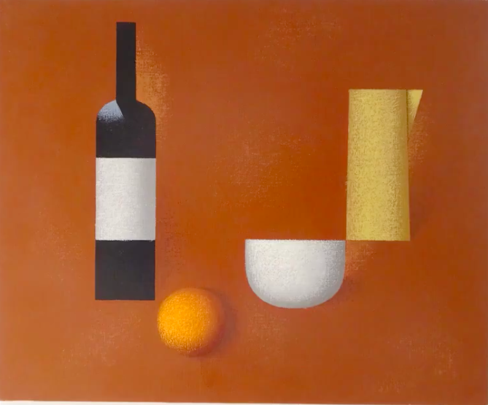

J. M. de Martín. Obra
| Historieta: Chasco | Ninot | 1937 | Almanaque de Pelayos para 1938 | Historia curta amb unes il·lustracions titulada Chasco | Martín |  | HumorPelayosPublicat | ||
| Historieta | Ninot | 1937 | Almanaque de Pelayos para 1938 | Historieta | Martín |  | HumorPelayosPublicat | ||
| Caricatura De Martín | Ninot | 1937 | Almanaque de Pelayos para 1938 | Caricatura a la pàgina amb altres caricatures dels col·laboradors de la revista. (es autocaricatura, o feta per un altre autor? ) |  | HumorPelayosPublicat | |||
| Acudits | Ninot | 1937 | Almanaque de Pelayos para 1938 | Pàgina de “chistes” | Martín |  | HumorPelayosPublicat | ||
| Dibuix de capçalera secció Margaritinas | Ninot | 1937 | Pelayos n.52 (29 d’agost 1937) | Dibuix de capçalera secció Margaritinas. 52-55 | Martín | HumorPelayosPublicat | |||
| Dibuix de capçalera secció Toque de Diana | Ninot | 1937 | Pelayos n.51 (12 de desembre 1937) | Dibuix de capçalera secció Toque de Diana. 51-101 | M. |  | HumorPelayosPublicat | ||
| Dibuix de capçalera seccions Correspondencia i Miscelánea | Ninot | 1937 | Pelayos n.48 (21 de novembre 1937) | Dibuix de capçalera secció Correspondencia i Miscelánea | M. |  | HumorPelayosPublicat | ||
| Dibuix de capçalera secció Toque de Diana | Ninot | 1937 | Pelayos n.40 (26 de setembre 1937) | Dibuix de capçalera secció Toque de Diana. 40-50 | M. |  | HumorPelayosPublicat | ||
| Dibuix de capçalera secció Margaritinas | Ninot | 1937 | Pelayos n.36 (29 d’agost 1937) | Dibuix de capçalera secció Margaritinas. 36-51 i 56-101 | M. |  | HumorPelayosPublicat | ||
| Dibuix de capçalera secció Margaritinas | Ninot | 1937 | Pelayos n.33 (8 d’agost 1937) | Dibuix de capçalera secció Margaritinas. | Pep |  | HumorPelayosPublicat | ||
| Dibuix de portada: “Andanzas de Centeno” | Ninot | 1937 | Pelayos n.23 (30 de maig 1937) | Dibuix de portada: “Andanzas de Centeno” Historieta amb soldats carlins per a la revista infantil Pelayos. | Martín |  | HumorPelayosPublicat | ||
| Dibuix de capçalera secció El Gimnasta Pelayo | Ninot | 1937 | Pelayos n.22 (23 de maig 1937) | Dibuix de capçalera secció Colaboración del pelayo. | Pep |  | HumorPelayosPublicat | ||
| Dibuix de capçalera secció Colaboración del pelayo | Ninot | 1937 | Pelayos n.21 (16 de maig 1937) | Dibuix de capçalera secció Colaboración del pelayo. | Pep |  | HumorPelayosPublicat | ||
| Dibuix de capçalera secció Margaritinas | Ninot | 1937 | Pelayos n.21 (16 de maig 1937) | Dibuix de capçalera secció Margaritinas. És repeteix en altres números, com el n. 22 | Pep |  | HumorPelayosPublicat | ||
| Dibuix de capçalera secció Actualidades | Ninot | 1937 | Pelayos n.20 (9 de maig 1937) | Dibuix de capçalera secció Actualidades. Es repetirà en altres números, com el n.22, o 23 | Pep |  | HumorPelayosPublicat | ||
| Dibuix de capçalera secció Toque de Diana | Ninot | 1937 | Pelayos n.20 (9 de maig 1937) | Dibuix de capçalera secció Toque de Diana. Es repeteix en altres números, com el n. 23 | Pep |  | HumorPelayosPublicat | ||
| Dibuix de capçalera secció Margaritinas | Ninot | 1937 | Pelayos n.17 (18 d’abril 1937) | Dibuix de capçalera secció Margaritinas. (n. 18, n. 23, n. 34 en color) | Pep |   | HumorPelayosPublicat | ||
| Dibuix de capçalera secció Margaritinas | Ninot | 1937 | Pelayos n.15 (4 d’abril 1937) | Dibuix de capçalera secció Margaritinas | Pep |  | HumorPelayosPublicat | ||
| Dibuix de portada: “Andanzas de Centeno” | Ninot | 1937 | Pelayos n.16 (11 d’abril 1937) | Dibuix de portada: “Andanzas de Centeno” Historieta amb soldats carlins per a la revista infantil Pelayos. | Boro |  | HumorPelayosPublicat | ||
| Dibuix de portada: “Por Dios la Patria y el Rey…” | Ninot | 1937 | Pelayos n.14 (28 de març 1937) | Dibuix de portada: “Por Dios la Patria y el Rey…” amb soldats carlins per a la revista infantil Pelayos. | Martín |  | HumorPelayosPublicat | ||
| Vinyeta: “¿como pasaste la semana que te dieron permiso?” | Ninot | 1937 | Pelayos n.9 (21 febrer 1937) | Vinyeta: “¿como pasaste la semana que te dieron permiso?” amb soldats carlins per a la revista infantil Pelayos. | M.J. Cotino |  | HumorPelayosPublicat | ||
| Vinyeta: “Somos niños los pelayos…” | Ninot | 1937 | Pelayos n.9 (21 febrer 1937) | Vinyeta: “Somos niños los pelayos…” amb soldats carlins per a la revista infantil Pelayos. | M.J. Cotino |  | HumorPelayosPublicat | ||
| Historieta: “Por latoso” | Ninot | 1937 | Pelayos n.7 (7 febrer 1937) | “Por latoso” Historieta amb soldats carlins per a la revista infantil Pelayos. | M.J. Cotino |  | HumorPelayosPublicat | ||
| Patum 1939 | Dibuix publicat | 1939 | Dibuix per al cartell i coberta del programa de les festes de Corpus de 1939: un tabaler amb el jou i les fletxes. | Martín | BergaEphemeraPatum | ||||
| Para comprender el cine | Publicació | 1943 | Llibre | Ed. Dolmen. Barcelona |  | Publicat | Biblioteca Kap | ||
| 9 | Publicació | 1944 | Llibre. | Caricatures dels 9 integrants de la redacció de la revista Alerta. Lopez imp. textos de Néstor Luján. (semblança de De Martín, i autocaricatura) | Martín. | CaricaturaHumorPublicat | |||
| Loco Retablo de la Patum | Publicació | 1944 | Llibre | Llibret amb textos i dibuixos. 24 p. 19 cm | Martín | HumorPublicat | Bibloteca Kap | ||
| Retrat de Salvador Bartoló | Pintura | 1945 | Oli o Gouache sobre tela | Signat i dedicat darrera. Juliol de 1945 | de Martín |   | Oli | ||
| Acudits | Ninot | 1945 | Dibuixos publicats a la revista Cucú | 25/11/1945 primer dibuix en el núm. 83. Publicarà fins el núm 96 (24/2/1946). | Pep | HumorNinots | |||
| Retrat de Jordi Vilardaga | Pintura | 1945 | Oli sobre tela. | Oli | Jordi Vilardaga | ||||
| Autorretrat | Pintura | 1945 | Oli o gouache sobre cartró. No datat ni signat (data presumible) | Autorretrat d’estil entre caricaturesc i realista. | Oli | Carlos de Martín | |||
| Nuri. Retrat de Núria Comas Bacardit | Pintura | 1946 | Signat i datat al darrera el desembre de 1946, mostra el retrat de Núria Comas Bacardit. | De Martín |   | Oli | Família Comas Bacardit | ||
| De la caricatura | Text | 1946 | El Correo Catalán, 13/4/1946. Article sobre la caricatura. | Josep Maria de Martín. Pep. | |||||
| Retrat d’una dona | Dibuix original | 1946 | Tinta sobre paper. (data presumible) | Retrat d’una dona asseguda en vista frontal, i mirant l’espectador. Es la mateixa dona de la que hi ha un estudi en color. | Martín | Tinta | Carlos de Martín | ||
| Retrat d’una dona | Pintura | 1946 | Oli o gouache sobre cartró. No datat ni signat (data presumible) | Retrat d’una dona de cabells negres i camisa blava en vista frontal, amb els braços plegats i mirant l’espectador. Periode d’aprenentatge amb Ramon Rogent (pels colors i la paleta emprats). Es la mateixa dona de la que hi ha un dibuix a tinta, en línia. Hi ha un retrat de Rogent similar, de la poetessa Maria Dolres Arroyo, dona del poeta Gutiérrez. | Carlos de Martín | ||||
| Cadira | Pintura | 1946 | Oli o gouache sobre cartró. No datat ni signat (data presumible) | Estudi d’una cadira. Periode d’aprenentatge amb Ramon Rogent (pels colors i la paleta emprats) | Carlos de Martín | ||||
| Autorretrat | Pintura | 1946 | Oli sobre cartró. Datat al darrere 20-V-1946 | Autorretrat completament diferent de l’estil pictòric al que ens té acostumat. | Oli | Carlos de Martín | |||
| El pi de les tres branques | Pintura | 1947 | octubre de 1947 | Apareix al fulletó de la seva primera exposició a la Sala Argos (1950) | Martín | Oli | Carlos de Martín | ||
| Les acàcies mortes | Pintura | 1947 | juliol de 1947 | Apareix al fulletó de la seva primera exposició a la Sala Argos (1950) | Martín | Oli | |||
| Ocell i mar | Pintura | 1947 | Novembre de 1947 | Apareix al fulletó de la seva primera exposició a la Sala Argos (1950) | Martín | Oli | |||
| La pineda | Pintura | 1947 | juliol de 1947 | Apareix al fulletó de la seva primera exposició a la Sala Argos (1950) | Martín | Oli | |||
| Estudi dona nua | Dibuix original | 1948 | Carbonet sobre paper. Datat darrere, XI-1948 | Martín |  | Inèdit | Carlos de Martín | ||
| La Patum, 1948 | Dibuix publicat | 1948 | Dibuix per al cartell i programa de La Patum: Una massa. | M. | BergaEphemeraPatum | ||||
| Perfil | Dibuix original | 1948 | grafit sobre paper. datat agost de 1948. perfil de noia traçat amb línia de grafit gruixut sobre paper. | sense signar | Carlos de Martín | ||||
| Dibuix | Dibuix original | 1948 | dibuix acolorit d’un figura d’animal (gos?) carbonet i pastel sobre cartró. Datat Novembre de 1948 | sense signar | Carlos de Martín | ||||
| Les acàcies | Pintura | 1948 | Oli sobre fusta. 61x50. | Apareix al catàleg de l’exposició antològica de l’any 2000. | Martín | Oli | |||
| Senyora de Nani Valls | Pintura | 1948 | desembre de 1948 | Apareix al fulletó de la seva primera exposició a la Sala Argos (1950) | Martín | Oli | |||
| L’oreneta i les oliveres | Pintura | 1948 | Agost de 1948 | Apareix al fulletó de la seva primera exposició a la Sala Argos (1950) | Martín | Oli | |||
| Autorretrat | Pintura | 1948 | Oli sobre tela. 22x16. juliol de 1948 | Apareix al fulletó de la seva primera exposició a la Sala Argos (1950). Apareix al catàleg de l’exposició antològica de l’any 2000. Apareix al catàleg de l’exposició Passió intel·lectual, 2023 | Martín | Oli | Col. Joan Ferrer (Montserrat Canudas) | ||
| Paisatge amb figura | Pintura | 1949 | Oli sobre tela?. 46x38. | Apareix al catàleg del II Salón de Octubre (Galerias Laietanas, 8-28 d’Octubre, 1949. | |||||
| Roents Alzines | Pintura | 1949 | Oli sobre tela? | Gabriel Ferrater esmenta “Las ardientes encinas” com una tela de l’any 1949. “resumen y exaltación de la primera manera del artista”. p. 12 separata Laye: La pintura de JM de Martín. | |||||
| Retrat de Joan Ferraté | Pintura | 1949 | (data probable). Reproducció a Biblioteca de la Universitat de Girona | Martín |  | Amalia Ferraté /Biblioteca Universitat Girona | |||
| Paris, hivern | Pintura | 1949 | desembre de 1949 | Apareix al fulletó de la seva primera exposició a la Sala Argos (1950). Apareix al catàleg de l’exposició antològica de l’any 2000. | Martín | Oli | |||
| El poblet | Pintura | 1949 | Octubre de 1949 | Apareix al fulletó de la seva primera exposició a la Sala Argos (1950) | Martín | Oli | |||
| Cases i gallines | Pintura | 1949 | juliol de 1949 | Apareix al fulletó de la seva primera exposició a la Sala Argos (1950) | Martín | Oli | |||
| Ampolla mallorquina | Pintura | 1949 | abril de 1949 | Apareix al fulletó de la seva primera exposició a la Sala Argos (1950). L’exposa també al II Salón d’Octubre | Martín |  | Oli | ||
| Cases, arbres, turons | Pintura | 1949 | febrer de 1949 | Apareix al fulletó de la seva primera exposició a la Sala Argos (1950) | Martín | Oli | |||
| Pisa popular | Pintura | 1949 | febrer de 1949 | Apareix al fulletó de la seva primera exposició a la Sala Argos (1950) | Martín | Oli | |||
| La lletra maleïda | Text | 1950 | Amb el subtítol “Llibre destinat a parlar malament dels lletraferits, caigui qui caigui.” es tracta d’una primera versió (en català) del text satíric que es publicaria a la revista Laye l‘any 1952. | Petit llibret mecanografiat, inèdit. | Custodio Lopas |  | Custodio LopasHumorInèdit | Ramon Felipó | |
| Dürer | Pintura | 1950 | Bodegò datat el novembre de 1950. | Citat per Gabriel Ferrater al text La pintura de JM de Martín. | Martín | Oli | |||
| Nadal | Pintura | 1950 | novembre de 1950 | Reproduida a la portada del número de desembre de 1954 de la revista Berga | Martín | OliPublicat | https://xacpremsa.cultura.gencat.cat/pandora/viewer.vm?id=0000114953&page=1&search=&lang=ca&view=premsa | ||
| Globus en el paisatge | Pintura | 1950 | octubre de 1950 | Apareix al fulletó de la seva primera exposició a la Sala Argos (1950). Citat per Gabriel Ferrater al text La pintura de J. M. de Martín | Martín |  | Oli | ||
| Felicitats | Pintura | 1950 | setembre de 1950 | Apareix al fulletó de la seva primera exposició a la Sala Argos (1950) | Martín | Oli | |||
| Christa | Pintura | 1950 | agost de 1950 | Apareix al fulletó de la seva primera exposició a la Sala Argos (1950) | Martín | Oli | |||
| Ideales | Pintura | 1950 | agost de 1950 | Apareix al fulletó de la seva primera exposició a la Sala Argos (1950) | Martín | Oli | |||
| El pagès | Pintura | 1950 | Juliol de 1950 | Apareix al fulletó de la seva primera exposició a la Sala Argos (1950) | Martín | Oli | |||
| Berga, Corpus | Pintura | 1950 | Juny de 1950 | Apareix al fulletó de la seva primera exposició a la Sala Argos (1950) | Martín | Oli | |||
| Bodegó tòpic | Pintura | 1950 | Maig de 1950 | Apareix al fulletó de la seva primera exposició a la Sala Argos (1950) | Martín | Oli | |||
| Noia al sol | Pintura | 1950 | Maig de 1950 | Apareix al fulletó de la seva primera exposició a la Sala Argos (1950) | Martín | Oli | |||
| Port, capvespre | Pintura | 1950 | febrer de 1950 | Apareix al fulletó de la seva primera exposició a la Sala Argos (1950) | Martín |  | Oli | Fons Joan Ferreter Biblioteca Girona | |
| El pintor J. A. Roda | Pintura | 1950 | febrer de 1950 | Apareix al fulletó de la seva primera exposició a la Sala Argos (1950). Citat per Gabriel Ferrater al text La pintura de J. M. de Martín | Martín | Oli | |||
| La noia dels ulls tendres | Pintura | 1950 | Oli sobre tela. 92 x 73. Maig de 1950 | Figura frontal d’una noia. Apareix al fulletó de la seva primera exposició a la Sala Argos (1950). Reproduida a Laye n. 22 (1953) p.25(b) | Martín |  | Oli | https://ddd.uab.cat/pub/laye/laye_a1953m1-3n22.pdf | |
| Sigfrid | Pintura | 1950 | Oli sobre tela 65x81 | Apareix al fulletó de la seva primera exposició a la Sala Argos (1950). Citat per Gabriel Ferrater al text La pintura de J. M. de Martín | Martín |  | Oli | Salvador Vinyes | |
| La Patum de Berga. (Dau al set) | Publicació | 1951 | Dau al set. Número juny-juliol-agost 1951. 16 p. | Custodio Lopas. Josep M de Martín | Custodio LopasHumorLlibrePublicat | ||||
| Els pintors Maria Girona i Ràfols Casamada | Pintura | 1951 | febrer de 1951 | Citat per Gabriel Ferrater al text La pintura de J. M. de Martín | Oli | ||||
| Pollancres | Pintura | 1951 | agost de 1951. | Citat per Gabriel Ferrater al text La pintura de J. M. de Martín |  | Oli | |||
| El reixat | Pintura | 1951 | juliol de 1951. | Citat per Gabriel Ferrater al text La pintura de J. M. de Martín. Fotografia reproduída a Laye n. 23 |  | Oli | |||
| Gris | Pintura | 1951 | Bodegò datat el març de 1951. | Citat per Gabriel Ferrater al text La pintura de JM de Martín. | Martín | Oli | |||
| Jonas | Pintura | 1951 | Oli sobre fusta. 80x100 Juny de 1951. | Citat per Gabriel Ferrater al text La pintura de JM de Martín. | Martín |  | Oli | https://commons.wikimedia.org/wiki/File:Jon%C3%A0s.jpg | Col. Kap |
| Paisatge | Pintura | 1952 | Oli sobre tela. 54x73 | Data estimada. Regal de noces a Salvador Bartoló (1959) | Martín | _abans_1959.jpeg) | Oli | Margarita Bartoló | |
| La síndria | Pintura | 1952 |  | Oli | Jordi Escobet | ||||
| La Torre | Pintura | 1952 | setembre de 1952 | Citat per Gabriel Ferrater al text La pintura de J. M. de Martín | Oli | ||||
| Isabel | Pintura | 1952 | novembre de 1952 | Citat per Gabriel Ferrater al text La pintura de J. M. de Martín | Oli | ||||
| Plaça de l'església | Pintura | 1952 | octubre de 1952 | Citat per Gabriel Ferrater al text La pintura de J. M. de Martín | Oli | ||||
| Ocarina portuguesa | Pintura | 1952 | Bodegó datat maig de 1952 | Apareix al catàleg de Salon de Pintura Actual, agost de 1954, a Berga | Oli | ||||
| Cases a Gòsol | Pintura | 1952 | Oli sobre tela. 73x60 agost de 1952. | Apareix al fulletò que fa de catàleg de l’exposició a les Galerias Arte (febrer de 1955). Citat per Gabriel Ferrater al text La pintura de J. M. de Martín. Apareix al catàleg de l’exposició antològica de l’any 2000. | Oli | ||||
| Cel baix | Pintura | 1952 | juliol de 1952. | Apareix al fulletò que fa de catàleg de l’exposició a les Galerias Arte (febrer de 1955) | Oli | ||||
| Sant Jordi | Pintura | 1952 | abril de 1952. | Apareix al fulletò que fa de catàleg de l’exposició a les Galerias Arte (febrer de 1955). Citat per Gabriel Ferrater al text La pintura de J. M. de Martín |  | Oli | Carlos de Martín (casa de Berga) | ||
| Quaresma | Pintura | 1952 | Oli sobre tela. Bodegó (llimona, cebes, sardines i carxofa) 50x65. Març de 1952 | Apareix al fulletò que fa de catàleg de l’exposició a les Galerias Arte (febrer de 1955). Reproducció fotogràfica que apareix a la revista Indice de Artes y Letras (1957). | Martín | .jpeg) | Oli | Margarita Bartoló | |
| Dibuix | Dibuix publicat | 1952 | Laye n. 19 (maig juny 1952) | Il·lustracions per al text “Inroducción a la pilología d ela ciencia” de Ramon Carnicer a la secció satírica La sal hace la espuma. | Martín | Tinta | https://ddd.uab.cat/pub/laye/laye_a1952m5-6n19.pdf | ||
| La letra maldita | Text | 1952 | Laye n.18 (març-abril 1952) | Text satíric signat com a Custodio Lopas. | Custodio Lopas | laye_18_custodio Lopas còpia.pdf | Custodio LopasHumor | https://ddd.uab.cat/pub/laye/laye_a1952m3-4n18.pdf | |
| Suburbi | Pintura | 1953 | desembre de 1953. | Apareix al fulletò que fa de catàleg de l’exposició a les Galerias Arte (febrer de 1955). Reproducció fotogràfica a la Antologia Española de artistas contemporáneos. |  | Oli | |||
| Les cases del silenci | Pintura | 1953 | novembre de 1953. | Apareix al fulletò que fa de catàleg de l’exposició a les Galerias Arte (febrer de 1955) | Oli | ||||
| Olga | Pintura | 1953 | agost de 1953. | Apareix al fulletò que fa de catàleg de l’exposició a les Galerias Arte (febrer de 1955) | Oli | ||||
| Les cases cegues | Pintura | 1953 | agost de 1953. | Apareix al fulletò que fa de catàleg de l’exposició a les Galerias Arte (febrer de 1955) | Oli | ||||
| Tres vasijas | Pintura | 1953 | juliol de 1953. | Apareix al fulletò que fa de catàleg de l’exposició a les Galerias Arte (febrer de 1955) | Oli | ||||
| La mar | Pintura | 1953 | abril de 1953. | Apareix al fulletò que fa de catàleg de l’exposició a les Galerias Arte (febrer de 1955). Fotografia en un article de Sebastià Gasch a Índice de Artes y Letras (1957) |  | Oli | |||
| Retrato de Ortega | Dibuix publicat | 1953 | Laye n. 23 (abril-juny 1953) | Retrat de José Ortega y Gasset. | Martín |  | Tinta | https://ddd.uab.cat/pub/laye/laye_a1953m4-6n23.pdf | |
| ¿Quién mató a Mr. X? Guions per a Ràdio Berga | Text | 1954 | Guions per a l’emissió d’un programa de Ràdio Berga. | Custodio Lopas | |||||
| Cercano está el mal | Text | 1954 | Novel·la policíaca (escrita a mitges amb Gabriel Ferrater) inacabada. | Gabriel Martín. | |||||
| El sol y la luna, la luna y el sol | Text | 1954 | Berga n.2 | Secció humorística escrita amb castellà directament traduït del ‘berguedà’ | Custodio Lopas. Josep M de Martín | berga 2 1954.pdf | Custodio LopasHumorPublicat | ||
| El sol y la luna, la luna y el sol | Text | 1954 | Berga n.1 | Secció humorística escrita amb castellà directament traduït del ‘berguedà’ | Custodio Lopas. Josep M de Martín | berga 1 1954.pdf | Custodio LopasHumorPublicat | ||
| Noia al prat | Pintura | 1954 | gener de 1955. | Apareix al fulletò que fa de catàleg de l’exposició a les Galerias Arte (febrer de 1955) | Oli | ||||
| El músic Manuel Valls | Pintura | 1954 | Oli sobre tela 53x63. desembre de 1954. | Apareix al fulletò que fa de catàleg de l’exposició a les Galerias Arte (febrer de 1955) | Martín |  | Oli | https://3.bp.blogspot.com/-E0R9mb-zEeM/UZfJ-A1Zr7I/AAAAAAAABS4/vl_maFnUtDc/s1600/P1020709.JPG | Col. Ramon Serra Massana |
| L’as de trèbols | Pintura | 1954 | desembre de 1954. | Apareix al fulletò que fa de catàleg de l’exposició a les Galerias Arte (febrer de 1955) | Oli | ||||
| Retrat de Salvador Bartoló | Pintura | 1954 | octubre de 1954. | Apareix al fulletò que fa de catàleg de l’exposició a les Galerias Arte (febrer de 1955) |  | Oli | Margarita Bartoló | ||
| Pins | Pintura | 1954 | setembre de 1954. | Apareix al fulletò que fa de catàleg de l’exposició a les Galerias Arte (febrer de 1955) | Oli | ||||
| Terra gojosa | Pintura | 1954 | Oli sobre tela, 65x50. agost de 1954. | Apareix al fulletò que fa de catàleg de l’exposició a les Galerias Arte (febrer de 1955). Apareix al catàleg de l’exposició antològica de l’any 2000. | Oli | ||||
| La gran xemeneia | Pintura | 1954 | agost de 1954. | Apareix al fulletò que fa de catàleg de l’exposició a les Galerias Arte (febrer de 1955) | Oli | ||||
| Prunes | Pintura | 1954 | juliol de 1954. | Apareix al fulletò que fa de catàleg de l’exposició a les Galerias Arte (febrer de 1955) | Oli | ||||
| La clau negra | Pintura | 1954 | juliol de 1954. | Apareix al fulletò que fa de catàleg de l’exposició a les Galerias Arte (febrer de 1955) | Oli | ||||
| Somriure en primavera | Pintura | 1954 | maig de 1954. | Apareix al fulletò que fa de catàleg de l’exposició a les Galerias Arte (febrer de 1955) | Oli | ||||
| Retrat d’Amàlia F. Barlow | Pintura | 1954 | març de 1954. | Apareix al fulletò que fa de catàleg de l’exposició a les Galerias Arte (febrer de 1955). És la germana de Joan i Gabriel Ferrater. | Oli | ||||
| La creu egípcia | Pintura | 1954 | Oli sobre tela. 73x60. Febrer de 1954. | Apareix al fulletò que fa de catàleg de l’exposició a les Galerias Arte (febrer de 1955) | Martín |  | Oli | https://artprivat.blogspot.com/search/label/Josep Maria de Martín | Ramon Serra Massana |
| Noia que pinta | Dibuix publicat | 1954 | Laye n. 24 (1954) | Dibuix d’una noia de perfil amb un pinzell davant un cavallet amb una tela. Tremp i tinta | Martín | Tinta | https://ddd.uab.cat/pub/laye/laye_a1954n24.pdf | ||
| Paisatge | Dibuix publicat | 1954 | Laye n. 24 (1954) | Dibuix d’un paisatge amb cases. Tinta i tremp sobre paper. | Martín | Tinta | https://ddd.uab.cat/pub/laye/laye_a1954n24.pdf | ||
| La pintura ingenua e intelectual de Paco Todó | Text | 1955 | Índice de Artes y Letras | Crítica | José M. de Martín | ||||
| Retrat | Pintura | 1955 | Oli. Apareix fotografiat a l’Antologia Española de artistas contemporáneos (1955) | Podria tractar-se d’un quadre diferent, o de retrats femenins que ja hem trobat abans: Isabel, o Amàlia F. Barlow. |  | ||||
| El sol y la luna, la luna y el sol | Text | 1955 | Berga n.7 | Secció humorística escrita amb castellà directament traduït del ‘berguedà’ | Custodio Lopas. Josep M de Martín | berga 7 1955.pdf | Custodio LopasHumorPublicat | ||
| El sol y la luna, la luna y el sol | Text | 1955 | Berga n.6 | Secció humorística escrita amb castellà directament traduït del ‘berguedà’ | Custodio Lopas. Josep M de Martín | berga 6 1955.pdf | Custodio LopasHumorPublicat | ||
| El sol y la luna, la luna y el sol | Text | 1955 | Berga n.5 | Secció humorística escrita amb castellà directament traduït del ‘berguedà’ | Custodio Lopas. Josep M de Martín | berga 5 1955.pdf | Custodio LopasHumorPublicat | ||
| El sol y la luna, la luna y el sol | Text | 1955 | Berga n.4 | Secció humorística escrita amb castellà directament traduït del ‘berguedà’ | Custodio Lopas. Josep M de Martín | berga 4 1955.pdf | Custodio LopasHumorPublicat | ||
| El sol y la luna, la luna y el sol | Text | 1955 | Berga n.3 | Secció humorística escrita amb castellà directament traduït del ‘berguedà’ | Custodio Lopas. Josep M de Martín | berga 3 1955.pdf | Custodio LopasHumorPublicat | ||
| La abstracción figurativa en Ráfols Casamada | Text | 1956 | Arte Vivo | Crítica | José M. de Martín | ||||
| La última generación y la penúltima | Text | 1956 | La Jirafa | Crítica | José M. de Martín | ||||
| Mercadé y Palencia | Text | 1956 | La Jirafa | Crítica | José M. de Martín | ||||
| La crítica difícil | Text | 1956 | La Jirafa | Crítica | José M. de Martín | ||||
| Miguel Villà, otra vez | Text | 1956 | La Jirafa | Crítica | José M. de Martín | ||||
| Dibuix de coberta | Dibuix publicat | 1956 | Dibuix que es repeteix en les diverses portades de la mateixa col·lecció. També és autor del logotip de l’editorial, un ocell que apareix a la darrera pàgina de la majoria de volums de la col·lecció. | Victoriano Crémer, Fúria y Paloma (Fe de vida, n.2) | HortaPublicat | ||||
| Dibuix de coberta | Dibuix publicat | 1956 | Dibuix que es repeteix en les diverses portades de la mateixa col·lecció. També és autor del logotip de l’editorial, un ocell que apareix a la darrera pàgina de la majoria de volums de la col·lecció. | Maria Beneyto, Poemas de la ciudad (Fe de vida, n.1) | HortaPublicat | ||||
| Dibuix de coberta | Dibuix publicat | 1956 | Dibuix que es repeteix en les diverses portades de la mateixa col·lecció. També és autor del logotip de l’editorial, un ocell que apareix a la darrera pàgina de la majoria de volums de la col·lecció. | Joan Perucho, El país de les meravelles (Signe n.2) | HortaPublicat | ||||
| Dibuix de coberta | Dibuix publicat | 1956 | Dibuix que es repeteix en les diverses portades de la mateixa col·lecció. També és autor del logotip de l’editorial, un ocell que apareix a la darrera pàgina de la majoria de volums de la col·lecció. | J.V. Foix, Del Diari 1918 (Signe n.1) | HortaPublicat | ||||
| Paisatge | Pintura | 1956 | Passió Intel·lectual | Jordi Vilardaga | |||||
| Dibuix de coberta | Dibuix publicat | 1957 | Dibuix de coberta. Col·lecció els autors de l’Ocell de Paper, XV: Serra i Gasulla; Adlert; Catardi. | ELS FALSOS PROFETES: JOHN MAYNARD KEYNES/ OCELLS EN PRIMAVERA/ MEDITACIONS. SERRA I GASULLA, J/ ADLERT, Miquel/ CATARDI, Rafael. 1957. 24 pág. Els autors de l´ocell de paper XV | Martín |  | |||
| Dibuix de coberta | Dibuix publicat | 1957 | Dibuix que es repeteix en les diverses portades de la mateixa col·lecció. També és autor del logotip de l’editorial, un ocell que apareix a la darrera pàgina de la majoria de volums de la col·lecció. | Carles Riba, Més els poemes (Signe n.5) | HortaPublicat | ||||
| Retrat de Salvador Espriu | Dibuix publicat | 1957 | Retrat a ploma de Salvador Espriu. | Salvador Espriu, Evocació de Rosselló-Pòrcel i altres notes (Signe n.3). Segons Ramon Felipó és el primer retrat d’Espriu. Es publicà en El llibre de tothom de l’any 1962 | HortaPublicat | https://www.raco.cat/index.php/Erol/article/download/267068/357614 | |||
| Dibuix de coberta | Dibuix publicat | 1957 | Dibuix que es repeteix en les diverses portades de la mateixa col·lecció. També és autor del logotip de l’editorial, un ocell que apareix a la darrera pàgina de la majoria de volums de la col·lecció. | Joan Teixidor, Entre les lletres i les arts (Signe n.4) | HortaPublicat | ||||
| Dibuix de coberta | Dibuix publicat | 1957 | Dibuix que es repeteix en les diverses portades de la mateixa col·lecció. També és autor del logotip de l’editorial, un ocell que apareix a la darrera pàgina de la majoria de volums de la col·lecció. | Salvador Espriu, Evocació de Rosselló-Pòrcel i altres notes (Signe n.3). En el mateix volum s’hi inclou un retrat de Salvador Espriu | HortaPublicat | ||||
| Natura morta | Pintura | 1957 | Catàleg de la Sección de Arte Contemporáneo de la Biblioteca-Museo Víctor Balaguer del 1969 | Martín | https://www.wikidata.org/wiki/Q19161306 | Biblioteca Museu Víctor Balaguer | |||
| El Tramvia | Pintura | 1958 | Data estimada. Presumiblement oli sobre tela. | Apareix al catàleg del II Saló d’Octubre | Martín | https://www.notion.so/Participa-en-el-II-Sal-n-de-Mayo-amb-l-obra-titolada-El-Tranv-a-59ec62a06b264c2289b3f919e0e507e8?pvs=4 | |||
| Església amb dues cases | Pintura | 1958 | Catàleg de la Sección de Arte Contemporáneo de la Biblioteca-Museo Víctor Balaguer del 1969 | Martín | https://www.wikidata.org/wiki/Q19161057 | Biblioteca Museu Víctor Balaguer | |||
| Cavall negre pasturant al bosc | Pintura | 1959 | Oli sobre tela. Datat 8/1959 |  | Oli | Carlos de Martín | |||
| Dibuix de coberta | Dibuix publicat | 1959 | Dibuix que es repeteix en les diverses portades de la mateixa col·lecció. També és autor del logotip de l’editorial, un ocell que apareix a la darrera pàgina de la majoria de volums de la col·lecció. | DDAA, Anejo 1 Fe de Vida (Fe de vida n. 1) |  | HortaPublicat | |||
| Dibuix de coberta | Dibuix publicat | 1959 | Dibuix que es repeteix en les diverses portades de la mateixa col·lecció. També és autor del logotip de l’editorial, un ocell que apareix a la darrera pàgina de la majoria de volums de la col·lecció. | Julián Andúgar, A bordo de España (Fe de vida, n.4) | HortaPublicat | ||||
| Dibuix de coberta | Dibuix publicat | 1959 | Dibuix que es repeteix en les diverses portades de la mateixa col·lecció. També és autor del logotip de l’editorial, un ocell que apareix a la darrera pàgina de la majoria de volums de la col·lecció. | Jaime Gil de Biedma, Compañeros de viaje (1952-1958) (Fe de vida n.3) |  | HortaPublicat | |||
| Dibuix de coberta | Dibuix publicat | 1959 | Dibuix que es repeteix en les diverses portades de la mateixa col·lecció. També és autor del logotip de l’editorial, un ocell que apareix a la darrera pàgina de la majoria de volums de la col·lecció. | Joan Vergés, Soledat de paisatges (Signe n.6) | HortaPublicat | ||||
| Penca de bacallà | Pintura | 1959 | Oli sobre tela. Datat, agost de 1959 | Carlos de Martín | |||||
| El cavaller | Pintura | 1959 | Oli sobre tela. 100 x 81 | Apareix al catàleg de l’exposició antològica de l’any 2000. | |||||
| Caricatures (La memoria veranea) | Caricatura | 1960 | Caricatures al llibre La memoria veranea de César González Ruano. | Colección Genio y Figura nº1. Editorial: Rafael Borrás Tela editorial 236p 16x22 cm 1960 | |||||
| Caricatura dels integrants del Cau d’Art | Dibuix publicat | 1961 | Caricatura que apareix al fulletó de l’exposició del Cau d’Art 1961 | reproduida a la revista Ecos. | Ephemera | ||||
| Dibuix de coberta | Dibuix publicat | 1961 | Dibuix que es repeteix en les diverses portades de la mateixa col·lecció. També és autor del logotip de l’editorial, un ocell que apareix a la darrera pàgina de la majoria de volums de la col·lecció. | Joaquín Marco, Fiesta en la calle (Fe de vida, n.5) | HortaPublicat | ||||
| Dibuixos pel programa de La Patum | Dibuix publicat | 1962 | 9 dibuixos de diferents comparses pel progama de la Patum de 1963. D’aquests dibuixos s’en van fer les rajoles del terra de la plaça de Sant Joan. | Martín | BergaEphemeraPatum | ||||
| Dibuix de coberta | Dibuix publicat | 1962 | Dibuix que es repeteix en les diverses portades de la mateixa col·lecció. També és autor del logotip de l’editorial, un ocell que apareix a la darrera pàgina de la majoria de volums de la col·lecció. | Francesc Vallverdú, Qui ulls ha (Signe n.9) | HortaPublicat | ||||
| Dibuix de coberta | Dibuix publicat | 1962 | Dibuix que es repeteix en les diverses portades de la mateixa col·lecció. També és autor del logotip de l’editorial, un ocell que apareix a la darrera pàgina de la majoria de volums de la col·lecció. | Xavier Amorós, Guardeu-me la paraula (Signe, n.8) | HortaPublicat | ||||
| Dibuix de coberta | Dibuix publicat | 1962 | Dibuix que es repeteix en les diverses portades de la mateixa col·lecció. També és autor del logotip de l’editorial, un ocell que apareix a la darrera pàgina de la majoria de volums de la col·lecció. | Gabriel Ferrater, Menja’t una cama (Signe n.7) | HortaPublicat | ||||
| Dibuix per al programa de la festa de Sant Eloi, 1964 | Dibuix publicat | 1964 | Dibuix per al programa de la festa de Sant Eloi, 1964 | J. M. De Martín | BergaEphemeraPublicat | ||||
| La Patum, 1964 | Dibuix publicat | 1964 | Dibuix per al cartell i programa de La Patum: una taca formant la formadel tabaler | - | BergaEphemeraPatum | ||||
| Dibuix de coberta | Dibuix publicat | 1964 | Dibuix que es repeteix en les diverses portades de la mateixa col·lecció. També és autor del logotip de l’editorial, un ocell que apareix a la darrera pàgina de la majoria de volums de la col·lecció. | Agustín Millares, Habla Viva (Fe de Vida, n.6) | HortaPublicat | ||||
| Disseny del cartell i programa de la Fira de Maig de Berga | Dibuix publicat | 1965 | Disseny del cartell i programa de la Fira de Maig de Berga (sense dibuix fet per DM) | BergaEphemera | |||||
| Dibuix de coberta | Dibuix publicat | 1965 | Dibuix que es repeteix en les diverses portades de la mateixa col·lecció. També és autor del logotip de l’editorial, un ocell que apareix a la darrera pàgina de la majoria de volums de la col·lecció. | José Batlló, La señal (Fe de Vida, n.7) | HortaPublicat | ||||
| Dibuix per al programa del XXI Campionat de Catalunya de Patinatge artístic (Berga), 1966 | Dibuix publicat | 1966 | Dibuix per al programa del XXI Campionat de Catalunya de Patinatge artístic (Berga), 1966 | Ephemera | |||||
| Dibuix i disseny del cartell i programa de la Fira de Maig de Berga | Dibuix publicat | 1966 | Dibuix per al cartell i programa de la fir de maig de Berga | BergaEphemera | |||||
| Dibuix per al programa dels recitals i concerts de les Joventuts Musicals de Berga | Dibuix publicat | 1966 | Dibuix per al programa dels recitals i concerts de les Joventuts Musicals de Berga | Es fa servir el mateix dibuix per diferents recitals de 1966 | BergaEphemera | ||||
| Dibuix per al programa i cartell de la festivitat de Santa Bàrbara, 1966 | Dibuix publicat | 1966 | Dibuix per al programa i cartell de la festivitat de Santa Bàrbara, 1966 | Saldes | BergaEphemera | ||||
| Dibuix per als Jocs Florals del cinquantenari de la coronació de la Mare de Déu de Queralt, 1966 | Dibuix publicat | 1966 | Dibuix per als Jocs Florals del cinquantenari de la coronació de la Mare de Déu de Queralt, 1966 | BergaEphemera | |||||
| Dibuix per al I concurs de teatre amateur Premi Ramon Vinyes. | Dibuix publicat | 1966 | Dibuix per al I concurs de teatre amateur Premi Ramon Vinyes. | BergaEphemera | |||||
| Dibuix per al programa i cartells del cinquantenari de la coronació de la Mare de Déu de Queralt, 1966 | Dibuix publicat | 1966 | Dibuix d’una orenata sobre la mà de la Mare de Déu. | BergaEphemera | |||||
| La Patum, 1966 | Dibuix publicat | 1966 | Dibuix per al cartell i programa de La Patum: Un diable bicolor amb les mans enlaire | - | BergaEphemeraPatum | ||||
| Dibuix i disseny del cartell i programa de la Fira de Maig de Berga | Dibuix publicat | 1967 | Dibuix per al cartell i programa de la fir de maig de Berga | BergaEphemera | |||||
| Dibuix per al programa i cartell de les festes de Nadal, cap d’any i reis, 1967-68 | Dibuix publicat | 1967 | Dibuix per al programa i cartell de les festes de Nadal, cap d’any i reis, 1967-68 | Ephemera | |||||
| Dibuix per al programa de la festa de Sant Eloi, 1967 | Dibuix publicat | 1967 | Dibuix per al programa de la festa de Sant Eloi, 1967 | J. M. De Martín | BergaEphemeraPublicat | ||||
| Dibuix per al programa i cartell de la festivitat de Santa Bàrbara, 1967 | Dibuix publicat | 1967 | Dibuix per al programa i cartell de la festivitat de Santa Bàrbara, 1967 | Saldes | BergaEphemera | ||||
| Dibuix per al programa dels recitals i concerts de les Joventuts Musicals de Berga | Dibuix publicat | 1967 | Dibuix per al programa dels recitals i concerts de les Joventuts Musicals de Berga | Es fa servir el mateix dibuix per diferents recitals de 1967 | BergaEphemera | ||||
| Dibuix cartell i programa XI Concurs de boletaires | Dibuix publicat | 1967 | Dibuix cartell i programa XI Concurs de boletaires | Ephemera | |||||
| Dibuix celebració XXVIII Aniversario de la Liberación, 1967 | Dibuix publicat | 1967 | Dibuix celebració XXVIII Aniversario de la Liberación, 1967 | Ephemera | |||||
| La Patum, 1967 | Dibuix publicat | 1967 | Dibuixos interiors al programa de La Patum | Martín | BergaEphemeraPatum | ||||
| La Patum, 1967 | Dibuix publicat | 1967 | Dibuix per al cartell i programa de La Patum: Un sintètic turc imitant impressió de linòleum. | - | BergaEphemeraPatum | ||||
| Nova auca de Berga | Publicació | 1968 | Auca de Berga | Llibret amb 48 dibuixos sobre la localitat de Berga i voltants. Imprès a la gràfica de Joan Ferrer. Introducció signada per Custodio Lopas. Dibuixos signats Martín. | J.M. de Martín |  | CaricaturaCustodio LopasHumorLlibreNinots | ||
| Dibuix per al programa i cartell de les festes de Nadal, cap d’any i reis, 1969-70 | Dibuix publicat | 1969 | Dibuix per al programa i cartell de les festes de Nadal, cap d’any i reis, 1969-70 | Ephemera | |||||
| Dibuix per al cartell i prgrama de la festa de Els Cristòfols | Dibuix publicat | 1969 | Dibuix per al cartell i prgrama de la festa de Els Cristòfols | Ephemera | |||||
| Dibuix celebració XXX Aniversario de la Liberación, 1969 | Dibuix publicat | 1969 | Dibuix celebració XXX Aniversario de la Liberación, 1969 | Ephemera | |||||
| Dibuix per al cartell i prgrama de la festa de Els Cristòfols | Dibuix publicat | 1970 | Dibuix per al cartell i prgrama de la festa de Els Cristòfols | Ephemera | |||||
| Dibuix i disseny del cartell i programa de la festa de Sta Eulàlia | Dibuix publicat | 1970 | Dibuix i disseny del cartell i programa de la festa de Sta Eulàlia | Ephemera | |||||
| Dibuix i disseny del cartell i programa de la festa de St Eloi | Dibuix publicat | 1970 | Dibuix i disseny del cartell i programa de la festa de St Eloi | Ephemera | |||||
| Dibuix i disseny del cartell i programa de la festa de St Pere de la Portella | Dibuix publicat | 1970 | Dibuix i disseny del cartell i programa de la festa de St Pere de la Portella | Ephemera | |||||
| Dibuix i disseny del cartell i programa de la Fira de Maig de Berga | Dibuix publicat | 1970 | Dibuix per al cartell i programa de la fir de maig de Berga | BergaEphemera | |||||
| Dibuix per al cartell i programa de la festa de St. Quirze de Pedret | Dibuix publicat | 1970 | Dibuix per al cartell i programa de la festa de St. Quirze de Pedret | Ephemera | |||||
| La prensa periódica bergadana (1812-1969) | Publicació | 1970 | Recerca bibliogràfica sobre publicacions berguedanes. Editat pel Museu Municipal de Berga | Josep Maria de Martín | BergaLlibre | ||||
| Calendari Framacia Cosp | Publicació | 1971 | Berga en el segle XVII. Calendari farmacia Cosp per a 1971. Espiral. Textos de Manuel Riu. Dibuixos de J. M. De Martín. | 12 dibuixos. | De Martín. | BergaEphemera | |||
| Dibuix per al programa i cartell de les festes de Nadal, cap d’any i reis, 1971-72 | Dibuix publicat | 1971 | Dibuix per al programa i cartell de les festes de Nadal, cap d’any i reis, 1971-72 | Ephemera | |||||
| Dibuix per al cartell i programa de la festa de St. Quirze de Pedret | Dibuix publicat | 1971 | Dibuix per al cartell i programa de la festa de St. Quirze de Pedret | Ephemera | |||||
| Dibuix i disseny del cartell i programa de la festa Major de La Valldan | Dibuix publicat | 1971 | Dibuix i disseny del cartell i programa de la festa Major de La Valldan | Ephemera | |||||
| Dibuix celebració XXXII Aniversario de la Liberación, 1971 | Dibuix publicat | 1971 | Dibuix celebració XXXII Aniversario de la Liberación, 1971 | Ephemera | |||||
| Dibuix i disseny del cartell i programa de la festa Major d’Espinalbet | Dibuix publicat | 1971 | Dibuix i disseny del cartell i programa de la festa Major d’Espinalbet | Ephemera | |||||
| Dibuix i disseny del cartell i programa de la festa de St Eloi | Dibuix publicat | 1971 | Dibuix i disseny del cartell i programa de la festa de St Eloi | Ephemera | |||||
| El ruc negre | Pintura | 1971 | Oli sobre tela | Passió intel·lectual. | Martín |  | Carlos de Martín | ||
| Añadido a La prensa periódica bergadana (1812-1969) | Publicació | 1971 | Petit volum en el que afegeix informació i noves capçaleres al primer volum. | BergaLlibre | |||||
| Dibuix per al programa i cartell de les festes de Nadal, cap d’any i reis, 1972-73 | Dibuix publicat | 1972 | Dibuix per al programa i cartell de les festes de Nadal, cap d’any i reis, 1972-73 | Ephemera | |||||
| Dibuix per al cartell i prgrama de la festa de Els Cristòfols | Dibuix publicat | 1972 | Dibuix per al cartell i prgrama de la festa de Els Cristòfols | Ephemera | |||||
| Dibuix celebració XXXIII Aniversario de la Liberación, 1972 | Dibuix publicat | 1972 | Dibuix celebració XXXIII Aniversario de la Liberación, 1972 | Ephemera | |||||
| Dibuix i disseny del cartell i programa de la festa Major de Castell de l’Areny | Dibuix publicat | 1972 | Dibuix i disseny del cartell i programa de la festa Major de Castell de l’Areny | Ephemera | |||||
| Dibuix i disseny del cartell i programa de la festa de St Pere de Madrona | Dibuix publicat | 1972 | Dibuix i disseny del cartell i programa de la festa de St Pere de Madrona | Ephemera | |||||
| Dibuix i disseny del cartell i programa de la festa de Sta Eulàlia | Dibuix publicat | 1972 | Dibuix i disseny del cartell i programa de la festa de Sta Eulàlia | Ephemera | |||||
| Dibuix i disseny del cartell i programa de la festa de St Eloi | Dibuix publicat | 1972 | Dibuix i disseny del cartell i programa de la festa de St Eloi | Ephemera | |||||
| La Patum, 1972 | Dibuix publicat | 1972 | Dibuixos interiors al programa de La Patum | Martín | BergaEphemeraPatum | ||||
| La Patum, 1972 | Dibuix publicat | 1972 | Dibuix per al cartell i programa de La Patum: Una taca en forma de careta de ple | - | BergaEphemeraPatum | ||||
| San Giorgio, a Venècia | Pintura | 1972 | Apareix al fulletó de l’exposició a la Sala Greca (6-31 maig de 1986) | Martín | |||||
| Dibuix per al programa i cartell de les festes de Nadal, cap d’any i reis, 1974-75 | Dibuix publicat | 1973 | Dibuix per al programa i cartell de les festes de Nadal, cap d’any i reis, 1974-75 | Ephemera | |||||
| Dibuix per al programa i cartell de les festes de Nadal, cap d’any i reis, 1973-74 | Dibuix publicat | 1973 | Dibuix per al programa i cartell de les festes de Nadal, cap d’any i reis, 1973-74 | Ephemera | |||||
| Dibuix cartell i programa XIVII Concurs de boletaires | Dibuix publicat | 1973 | Dibuix cartell i programa XIVII Concurs de boletaires | Ephemera | |||||
| Dibuix i disseny del cartell i programa de la Fira de Maig de Berga | Dibuix publicat | 1973 | Dibuix per al cartell i programa de la fir de maig de Berga | BergaEphemera | |||||
| Dibuix i disseny del cartell i programa de la festa de St Pere de Madrona | Dibuix publicat | 1973 | Dibuix i disseny del cartell i programa de la festa de St Pere de Madrona | Ephemera | |||||
| Il·lustracions per al llibre Las personas y las cosas de Ramon Carnicer | Publicació | 1973 | Las personas y las cosas. Barcelona : Ediciones Peninsula, 1973 · 177 p. : illus. ; 19 cm. | Martín | Ninots | ||||
| Sense títol | Pintura | 1973 | Oli sobre tela. 60x50 | Subhasta 14m.cat | Martín |  | |||
| Calendari Framacia Cosp | Publicació | 1974 | Berga en el segle XVIII. Calendari farmacia Cosp per a 1974. Espiral. Textos de Manuel Riu. Dibuixos de J. M. De Martín. | 12 dibuixos. | De Martín. | BergaEphemera | |||
| Dibuix per al Concurs de gossos d’atura de Castellar de N’Hug | Dibuix publicat | 1974 | Dibuix per al Concurs de gossos d’atura de Castellar de N’Hug | Ephemera | |||||
| Dibuix per al cartell i prgrama de la festa de Els Cristòfols | Dibuix publicat | 1974 | Dibuix per al cartell i prgrama de la festa de Els Cristòfols | Ephemera | |||||
| Dibuix i disseny del cartell i programa de la 7 trobada de corals infantils de Catalunya | Dibuix publicat | 1974 | Dibuix i disseny del cartell i programa de la 7 trobada de corals infantils de Catalunya | BergaEphemera | |||||
| Dibuix i disseny del cartell i programa de la Fira de Maig de Berga | Dibuix publicat | 1974 | Dibuix per al cartell i programa de la fir de maig de Berga | BergaEphemera | |||||
| Dibuix i disseny del cartell i programa de la festa Major d’Espinalbet | Dibuix publicat | 1974 | Dibuix i disseny del cartell i programa de la festa Major d’Espinalbet | Ephemera | |||||
| La Patum, 1974 | Dibuix publicat | 1974 | Dibuix per al cartell i programa de La Patum: Una taca negra en forma de humana sobre fons daurat. | - | BergaEphemeraPatum | ||||
| Autorretrat nu | Pintura | 1974 | Oli sobre tela, 73x60 | Apareix al fulletó de l’exposició a la Sala Greca (6-31 maig de 1986) amb el títol “autorretrat”. Apareix al catàleg de l’exposició antològica de l’any 2000. | Martín | ||||
| Alfil, Dama, Torre | Pintura | 1974 | Apareix al fulletó de l’exposició a la Sala Greca (6-31 maig de 1986) | Martín | |||||
| El peu al coll | Publicació | 1975 | Llibre de poesia. Edicions del Museu Municipal de Berga. Hi ha dues edicions, la segona “lleugerament corregida i qui-sap-lo augmentada” | 24 poemes. | Bernat Meix | Bernat MeixHumorLlibrePublicat | |||
| Els jornals al cos | Publicació | 1975 | Llibre de poesia. Edicions del Museu Municipal de Berga. Hi ha dues edicions, la segona “lleugerament corregida i qui-sap-lo augmentada” | 23 poemes. | Bernat Meix | Bernat MeixHumorLlibrePublicat | |||
| La mosca al nas | Publicació | 1976 | Llibre de poesia. Edicions del Museu Municipal de Berga. | 21 poemes | Bernat Meix | ||||
| Dibuix i disseny del cartell i programa de la Fira de Maig de Berga | Dibuix publicat | 1976 | Dibuix per al cartell i programa de la fir de maig de Berga | BergaEphemera | |||||
| Dibuix i disseny del cartell i programa de la festa dels Elois | Dibuix publicat | 1976 | Dibuix i disseny del cartell i programa de la festa dels Elois | Ephemera | |||||
| La fi del món | Pintura | 1976 | Apareix al fulletó de l’exposició a la Sala Greca (6-31 maig de 1986) | Martín | |||||
| Calendari Framacia Cosp | Publicació | 1977 | Les guerres carlines a Berga. Calendari farmàcia Cosp per a 1977. Pinça. Tria de textos i dibuixos de J. M. De Martín. | 12 dibuixos. | De Martín. | BergaEphemera | |||
| El baixador | Pintura | 1977 | Oli sobre fusta, 73x60 | Apareix al fulletó de l’exposició a la Sala Greca (6-31 maig de 1986). Apareix al catàleg de l’exposició antològica de l’any 2000. Apareix reproduit al volum 3 del Diccionario Biografico Rafols de Artistas españoles. | Martín | ||||
| Nu gris | Pintura | 1977 | Oli sobre fusta, 80x60 | Apareix al fulletó de l’exposició a la Sala Greca (6-31 maig de 1986). Apareix al catàleg de l’exposició antològica de l’any 2000. | Martín |  | Ramon Sala | ||
| La corba | Pintura | 1978 | Apareix al fulletó de l’exposició a la Sala Greca (6-31 maig de 1986) | Martín | |||||
| L’erm | Pintura | 1978 | Oli sobre fusta, 81x74 | Apareix al fulletó de l’exposició a la Sala Greca (6-31 maig de 1986). Apareix al catàleg de l’exposició antològica de l’any 2000. | Martín |  | Ramon Serra Massana | ||
| El nus a la cua | Publicació | 1979 | Llibre de poesia. Edicions del Museu Municipal de Berga. Hi ha dues edicions, la segona “lleugerament corregida i qui-sap-lo augmentada” | 20 poemes. | Bernat Meix | Bernat MeixHumorLlibrePublicat | |||
| Calendari Framacia Cosp | Publicació | 1979 | El carrilet. Calendari farmàcia Cosp per a 1979. Pinça. Textos de J.M. De Martín. | 12 textos amb fotografies. | De Martín. | BergaCustodio LopasEphemera | |||
| Nu ocre | Pintura | 1979 | Oli sobre fusta, 92x60 | Apareix al fulletó de l’exposició a la Sala Greca (6-31 maig de 1986). Apareix al catàleg de l’exposició antològica de l’any 2000. | Martín | ||||
| La plaça deserta | Pintura | 1979 | Apareix al fulletó de l’exposició a la Sala Greca (6-31 maig de 1986) | Martín | |||||
| El pentinat | Pintura | 1979 | Oli sobre fusta, 64x54 | Apareix al fulletó de l’exposició a la Sala Greca (6-31 maig de 1986). Apareix al catàleg de l’exposició antològica de l’any 2000. | Martín | ||||
| La pèl-roja | Pintura | 1980 | Oli sobre fusta, 81x65 | Apareix al fulletó de l’exposició a la Sala Greca (6-31 maig de 1986). Apareix al catàleg de l’exposició antològica de l’any 2000. | Martín | ||||
| Calendari Framacia Cosp | Publicació | 1981 | Festes, fires i convits. Calendari farmàcia Cosp per a 1986. Pinça Textos i dibuixos de J.M. De Martín. | 12 dibuixos i textos signats BM (Bernat Meix) | De Martín. | BergaEphemera | |||
| Bodegó | Pintura | 1981 | Oli sobre tela | Es va exposar a Passió intel·lectual, 2022 | Martín |  | Ramon Sala | ||
| Maria Dolors | Pintura | 1981 | Oli sobre tela 73x60 | Apareix al fulletó de l’exposició a la Sala Greca (6-31 maig de 1986). Apareix al catàleg de l’exposició antològica de l’any 2000. | Martín | ||||
| Calendari Framacia Cosp | Publicació | 1982 | Cafès berguedans. Calendari farmàcia Cosp per a 1982. Pinça Textos de J.M. De Martín (signat BM) i fotografies. | 12 textos de BM (Bernat Meix) | BM | BergaEphemera | |||
| L’absència | Pintura | 1983 | Apareix al fulletó de l’exposició a la Sala Greca (6-31 maig de 1986) | Martín | |||||
| Retrat d’un amic | Pintura | 1983 | Apareix al fulletó de l’exposició a la Sala Greca (6-31 maig de 1986) | Martín | |||||
| Calendari Framacia Cosp | Publicació | 1984 | 1984. Calendari farmàcia Cosp per a 1984. Pinça Tria de textos i dibuixos de J.M. De Martín. | 12 dibuixos. | De Martín. | BergaEphemera | |||
| Calendari Framacia Cosp | Publicació | 1985 | Bergusis i romans. Calendari farmàcia Cosp per a 1985. Pinça Tria de textos i dibuixos de J.M. De Martín. | 12 dibuixos. | De Martín. | BergaEphemera | |||
| El pati del darrere | Pintura | 1985 | Oli sobre tela, 81x65 | Apareix al fulletó de l’exposició a la Sala Greca (6-31 maig de 1986). Apareix al catàleg de l’exposició antològica de l’any 2000. | Martín | ||||
| La tarda sienesa | Pintura | 1985 | Apareix al fulletó de l’exposició a la Sala Greca (6-31 maig de 1986) | Martín | |||||
| Prototipus | Pintura | 1985 | Apareix al fulletó de l’exposició a la Sala Greca (6-31 maig de 1986) | Martín | |||||
| El silenci | Pintura | 1985 | Oli sobre fusta. 100x33. | Apareix al fulletó de l’exposició a la Sala Greca (6-31 maig de 1986). Apareix al catàleg de l’exposició antològica de l’any 2000. Passió Intel·lectual, 2020. Portada del llibre El Clam a l’erm. | Martín |  | Ramon Sala | ||
| El raval | Pintura | 1985 | Apareix al fulletó de l’exposició a la Sala Greca (6-31 maig de 1986) | Martín | |||||
| El temple i el núvol | Pintura | 1985 | Apareix al fulletó de l’exposició a la Sala Greca (6-31 maig de 1986) | Martín | |||||
| L’ampolla buida | Pintura | 1985 | Apareix al fulletó de l’exposició a la Sala Greca (6-31 maig de 1986) | Martín | Carlos de Martín | ||||
| Calendari Framacia Cosp | Publicació | 1986 | 1986. Calendari farmàcia Cosp per a 1986. Pinça Tria de textos i dibuixos de J.M. De Martín. | 12 dibuixos. | De Martín. | BergaEphemera | |||
| Bol i peça d’escacs negres | Pintura | 1986 | Oli sobre tela. Datat octubre de 1986 | Martín | Carlos de Martín | ||||
| La ciutat serena | Pintura | 1986 | Oli sobre tela, 92x73 | Apareix al catàleg del 2000 | Martín |  | Antonia Parera (Agustí Ferrer) | ||
| Els atmetllers | Pintura | 1986 | Apareix al fulletó de l’exposició a la Sala Greca (6-31 maig de 1986) | Martín | |||||
| El crepúscle | Pintura | 1986 | Oli sobre tela 60x70 | Apareix al fulletó de l’exposició a la Sala Greca (6-31 maig de 1986) | Martín | Carlos De Martín | |||
| Les argelagues | Pintura | 1986 | Apareix al fulletó de l’exposició a la Sala Greca (6-31 maig de 1986) | Martín | |||||
| La solitud | Pintura | 1986 | Oli sobre tela, 73x50 | Apareix al fulletó de l’exposició a la Sala Greca (6-31 maig de 1986) | Martín | Oli | Marta Parera | ||
| Calendari Framacia Cosp | Publicació | 1987 | Places i placetes. Calendari farmàcia Cosp per a 1987. Pinça Textos de J.M. De Martín (signat BM) i fotografies. | 12 textos de BM (Bernat Meix) | BM | BergaEphemera | |||
| El meteorit | Pintura | 1987 | Oli sobre tela | Apareix al catàleg Passió Intel·lectual, 2022 | Martín | Col. Royo-Magrané | |||
| Retrat de perfil | Pintura | 1987 | Oli sobre tela, 81x65 | Apareix al catàleg de l’exposició antològica de l’any 2000. | Martín | ||||
| Els núvols | Pintura | 1987 | Oli sobre fusta, 92x60 | Apareix al catàleg de l’exposició antològica de l’any 2000. | Martín |  | Ramon Sala | ||
| El veïnat abandonat | Pintura | 1987 | Oli sobre tela, 81x65 | Apareix al catàleg de l’exposició antològica de l’any 2000. | Martín | ||||
| Etiqueta vermella | Pintura | 1987 | Oli sobre tela, 65x54 | Apareix al catàleg de l’exposició antològica de l’any 2000. | Martín | ||||
| El candeler | Pintura | 1987 | Oli sobre tela, 100x33 | Apareix al catàleg de l’exposició antològica de l’any 2000. | Martín | ||||
| Nu daurat | Pintura | 1987 | Oli sobre tela, 92x60 | Apareix al catàleg de l’exposició antològica de l’any 2000. | Martín | ||||
| Un cuerpo o dos | Publicació | 1987 | Novel·la policíaca, escrita conjuntament amb Gabriel Ferrater. | Escrita l’any 1952, no es publica fons al 1987. | LlibrePublicat | ||||
| El Tossal | Pintura | 1988 | Oli sobre tela, 100x81 | Apareix al catàleg de l’exposició antològica de l’any 2000. | Martín | Col. Joan Ferrer (Montserrat Canudas) | |||
| L’espera | Pintura | 1989 | Oli sobre tela. | Apareix al catàleg Passió Intel·lectual, 2022 | Ramon Sala | ||||
| Vent de llevant | Pintura | 1989 | Oli sobre tela, 100x81 | Apareix al catàleg de l’exposició antològica de l’any 2000. | Martín | ||||
| Així parlava Zaratrusta | Pintura | 1989 | Oli sobre tela, 92x73 | Apareix al catàleg de l’exposició antològica de l’any 2000. | Martín | Col. Royo-Magrané | |||
| Pep Deseuras | Pintura | 1990 | Oli sobre tela. 81x65 | Apareix al catàleg de l’exposició antològica de l’any 2000. | Martín | Oli | |||
| El recer | Pintura | 1990 | Oli sobre fusta, 81x65 | Apareix al catàleg de l’exposició antològica de l’any 2000. | Martín | ||||
| El retorn del blau | Pintura | 1990 | Oli sobre tela, 73x60 | Apareix al catàleg de l’exposició antològica de l’any 2000. | Martín | ||||
| Clea. | Dibuix publicat | 1992 | Oli sobre paper. | Dibuix per a la portada del n. 36 de la revista l’Erol | Ephemera | ||||
| El santuari | Pintura | 1992 | Oli sobre tela, 81x65 | Apareix al catàleg de l’exposició antològica de l’any 2000. | Martín | Oli | |||
| La casa enlluïda | Pintura | 1992 | Oli sobre tela, 73x60 | Apareix al catàleg de l’exposició antològica de l’any 2000. | Martín | Oli | |||
| La tarda | Pintura | 1993 | Oli sobre tela, 81x65 | Apareix al catàleg de l’exposició antològica de l’any 2000. | Martín | Oli | |||
| L’arbre | Pintura | 1994 | Oli sobre tela, 65x54 | Apareix al catàleg de l’exposició antològica de l’any 2000. | Martín | ||||
| La caseta | Pintura | 1994 | Oli sobre tela, 55x46 | Apareix al catàleg de l’exposició antològica de l’any 2000. | Martín | ||||
| Bol, ampolla i paquet | Pintura | 1994 | Oli sobre tela, 73x60 | Apareix al catàleg de l’exposició antològica de l’any 2000. | Martín | Oli | |||
| L’ou | Pintura | 1995 | Oli sobre tela, 65x54 | Apareix al catàleg de l’exposició antològica de l’any 2000. | Martín | Oli | |||
| L’alfil bandejat | Pintura | 1995 | Oli sobre tela, 61x50 | Apareix al catàleg de l’exposició antològica de l’any 2000. | Martín | Oli | |||
| Rime pentagonal | Pintura | 1995 | Oli sobre tela, 73x60 | Apareix al catàleg de l’exposició antològica de l’any 2000. | Martín | Oli | |||
| Peces d’escacs | Pintura | 1995 | Oli sobre tela, 65x54 | Apareix al catàleg de l’exposició antològica de l’any 2000. | Martín | Oli | |||
| El raval | Pintura | 1995 | Oli sobre tela, 73x60 | Apareix al catàleg de l’exposició antològica de l’any 2000. | Martín | Col. Royo-Magrané | |||
| La carta | Pintura | 1995 | Oli sobre tela, 81x65 | Apareix al catàleg de l’exposició antològica de l’any 2000. | Martín |  | Oli | Ramon Serra Massana | |
| L’adéu | Pintura | 1997 | Oli sobre tela, 73x60 | Apareix al catàleg de l’exposició antològica de l’any 2000. | Martín | ||||
| Il·lustracions del llibre Pasaje domingo de Ramon Carnicer | Publicació | 1998 | Diversos dibuixos per il·lustrar els textos de Ramon Carnicer | Colección trazos nº 10 Bígaro Ediciones 1998 161 pp. 4º menor … | Martín | Ninots | |||
| Retrat de Gabriel Ferrater | Pintura | 1998 | Oli sobre tela | Apareix al llibre Sobre pintura de Gabriel ferrater (2022). Apareix al catàleg Passió Intel·lectual, 2022 | Martín |  | Oli | Galeria Reusencs il·lustres. Reus | |
| La sorpresa (inacabat) | Pintura | 1999 | Sense signatura ni data. Quan el tenia pràcticament acabat, el resultat no el convencia i va deixar-lo i va tornar a començar. |  | Oli | Carlos de Martín | |||
| La cerilla | Pintura | 1999 | Oli sobre tela, 73x60 | Apareix al catàleg de l’exposició antològica de l’any 2000. | Martín |  | Oli | Ramon Serra Massana | |
| Josep María de Martín. Exposició Antològica. | Publicació | 2000 | Catàleg exposició antològica. Museu Municipal de Berga. | Text d’Agustí Ferrer. | LlibreOli | ||||
| La sorpresa | Pintura | 2000 | Oli sobre tela, 73x60 | Apareix al catàleg de l’exposició antològica de l’any 2000. | Martín | Oli | |||
| El clam a l’erm | Publicació | 2001 | El Clam a l’erm. Opera omnia. Pora. Ossa menor. text epíleg d’Agustí Ferrer. | Compilació dels quatre volums. Ed. Proa. | Bernat Meix | Bernat MeixHumorLlibrePublicat | |||
| Paisatge amb lluna | Pintura | 2003 | Oli sobre tela |  | Oli | Carlos de Martín | |||
| La taronja | Pintura | 2003 | Oli sobre tela |  | Oli | Carlos de Martín | |||
| Josep Maria de Martín. Passió intel·lectual. | Publicació | 2022 | Catàleg de l’exposició. Jaume Capdevila i Salvador Vinyes. | BergaBernat MeixCaricaturaCustodio LopasHumorInèditNinotsPatumPelayosPublicat | |||||
| Untitled | |||||||||
| Untitled |
{kind=link}
{kind=link}
{kind=link}